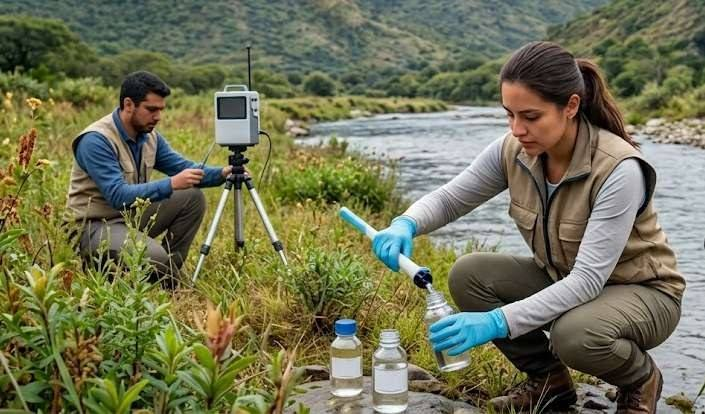

Guía de estudio
Las diez unidades desarrolladas, recuadros «Para pensar», actividades de autoevaluación y casos, glosario y referencias. 42 páginas.
Abrir la guía PDF · 0,6 MBDiplomatura Universitaria en Epidemiología con orientación en Vigilancia Ambiental, UPATecO, 2026
Dr. Francisco García Campos, coordinador de la Diplomatura y docente a cargo del módulo.

El propósito del módulo es que cada estudiante pueda comprender, operar y evaluar un sistema de vigilancia epidemiológica, y reconocer cómo ese sistema se amplía para vigilar los peligros ambientales y la interfaz humano–animal–ambiente.
La vigilancia es la herramienta que convierte datos dispersos en información para la acción. Sin vigilancia no hay alerta temprana, no hay evaluación de programas y no hay forma de saber si una intervención ambiental protege efectivamente a la población. Por eso este módulo es el puente entre los fundamentos de la epidemiología (Módulo 1) y los módulos de vigilancia ambiental, centinela y Una Salud (Módulos 5 a 7).
Elegí una unidad para ver su presentación acá mismo. Avanzá con las flechas, deslizando el dedo o con el botón de reproducción.
Elegí una unidad para empezar.
De libre acceso. Podés leerlos en línea o descargarlos.
Las diez unidades desarrolladas, recuadros «Para pensar», actividades de autoevaluación y casos, glosario y referencias. 42 páginas.
Abrir la guía PDF · 0,6 MBCómo leer, construir y usar la ficha de normas y procedimientos de la OMS (Cuadro 4.4 del MOPECE), con un modelo para eventos ambientales. 18 páginas.
Abrir la ficha PDF · 0,7 MBLectura obligatoria, bibliografía complementaria sobre vigilancia epidemiológica y ambiental, videos y cursos sobre Una Salud. 5 páginas.
Abrir la bibliografía PDF · 0,2 MBLos enlaces a cada texto están en el PDF de bibliografía.
Por Zoom, de 17 a 20 h. La consigna del trabajo grupal y la asignación de grupos se comparten por el campus.
Acceso solo para el equipo docente y las personas autorizadas. Incluye:
El material está en una carpeta de Google Drive. Al abrirla, Google te pide entrar con la cuenta que fue autorizada.
Abrir la carpeta¿No tenés acceso? Pedilo por correo indicando la cuenta de Google con la que vas a entrar.